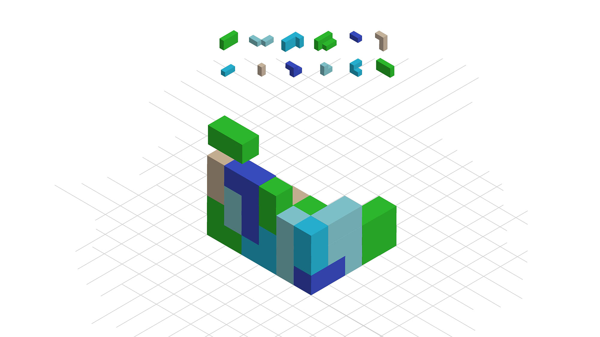
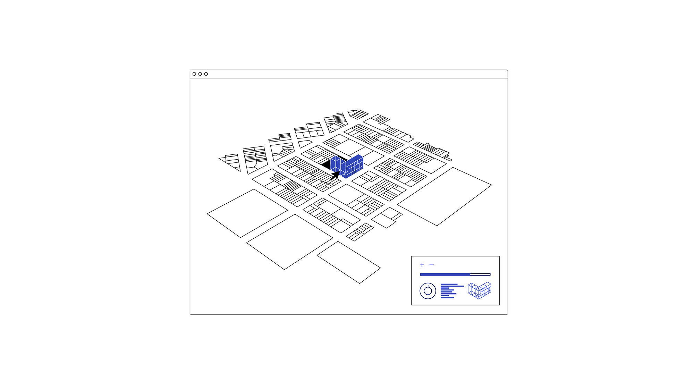
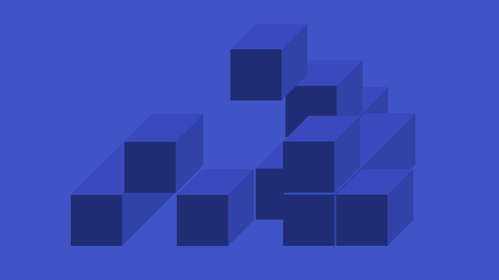
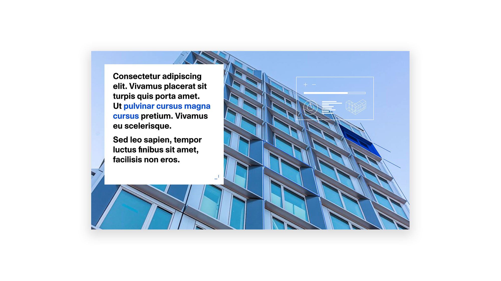

FullStack Modular
2017
A branding project + pitch visuals for a modular building company. The project was a design sprint so after a bit of initial branding we developed the identity through working on the pitch deck. It has since changed slightly, mostly in color palette, but these are the iterations I was working on with the other graphic designer, Laura Huaranga.
Client
FullStack ModularStudio
ABC Design LabMy role
Graphic DesignerCreative Director
Adam ChaloiecheepOther Graphic Designers
Laura Huaranga
Logo
   Visuals from the pitch deck